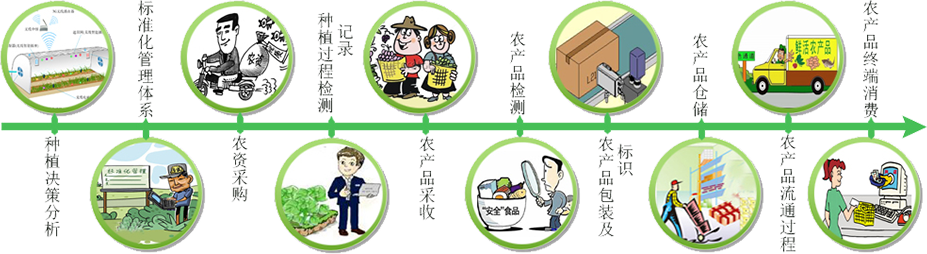
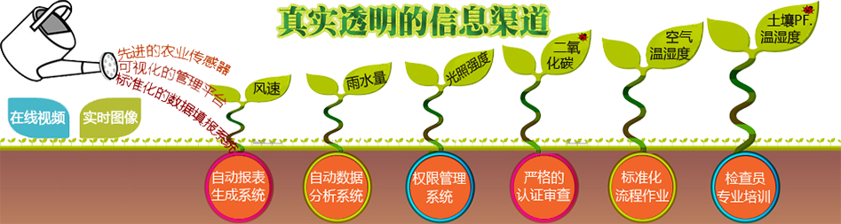
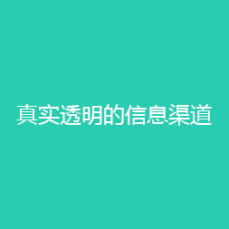
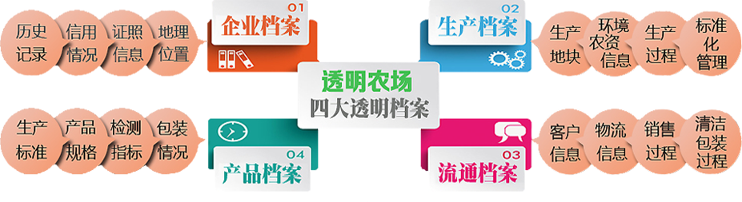

透明云农场说明
农产品质量安全事关广大人民群众的食用安全和身体健康。透明云农场农产品质量安全追溯系统旨在解决农产品质量安全问题，我们从源头开始抓好、抓实农产品安全监管工作。这样，一旦农产品出现问题，特别是出现危及消费者生命和健康的重大问题时，可追究直接责任人和监管部门的违规责任。我们通过建立从产地到市场的全程质量控制系统和追溯制度，对农产品产地环境、生产过程、产品检测、包装盒标识等关键环节进行监督管理，提高广大生产者的安全意识和责任意识，切实保障农产品的质量安全。从监管层面来讲，我们最核心的环节是抓农产品供应市场，通过供应市场这个环节可以有效把住入市农产品质量关，发现问题又可追溯到产地和生产者。
功能介绍
透明云农场农产品质量安全追溯系统以农产品条溯源标签作为主线，针对农产品从生产到销售各环节的农产品质量安全数据进行及时采集上传，为消费者提供及时的农产品质量安全追溯查询服务，为农牧部门提供有效的农产品质量安全监督管理机制和手段。
透明云农场农产品质量安全追溯系统在传统条码管理系统的基础上应用开发出的溯源标签，具有功能齐全、操作性强、安全可靠三大特点，可以提供良好的产品信息跟踪服务的相关功能。

我们将各涉农企业纳入系统应用和管理范围，通过及时采集农产品在各涉农企业的相关生产、加工、包装、运输、销售的相关信息，将信息纳入系统追溯数据库，消费者根据农产品的标码标签通过网站、终端、移动端查询农产品在各环节的相关质量安全数据。


我们通过各种传感器实时收集农产品信息，用户可以通过网站或者移动端随时随地查看产品信息，了解各种数据。

我们的四大透明档案保证了产品从生产，加工到出售都经过严格的标准，努力做到让用户用的放心，从源头保证了产品的安全。